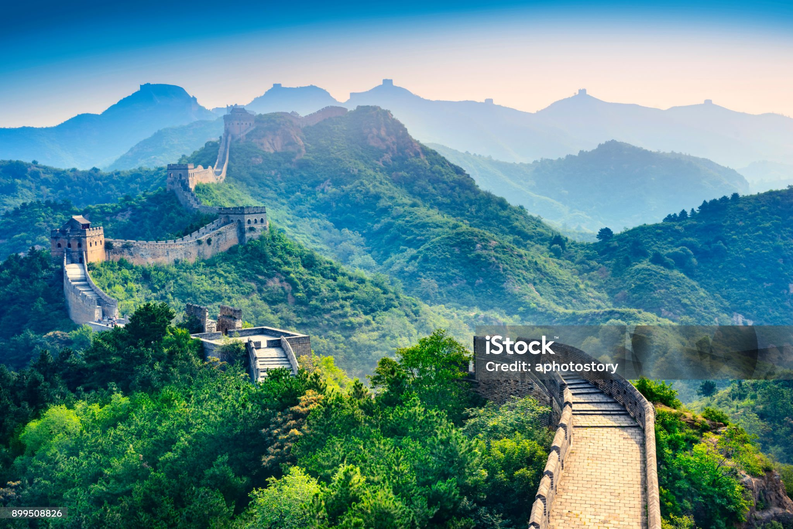
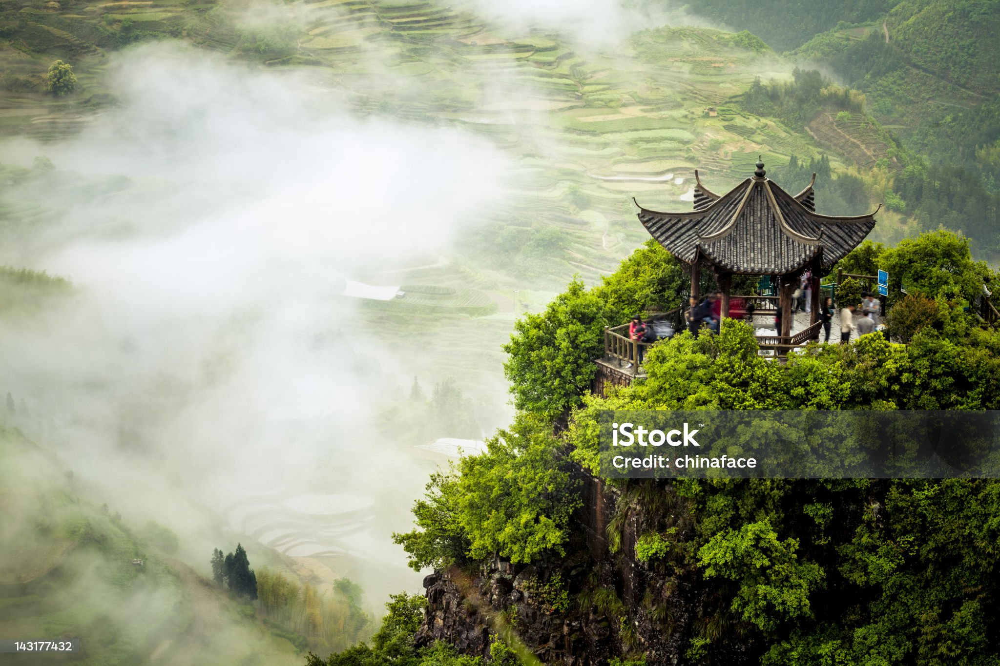
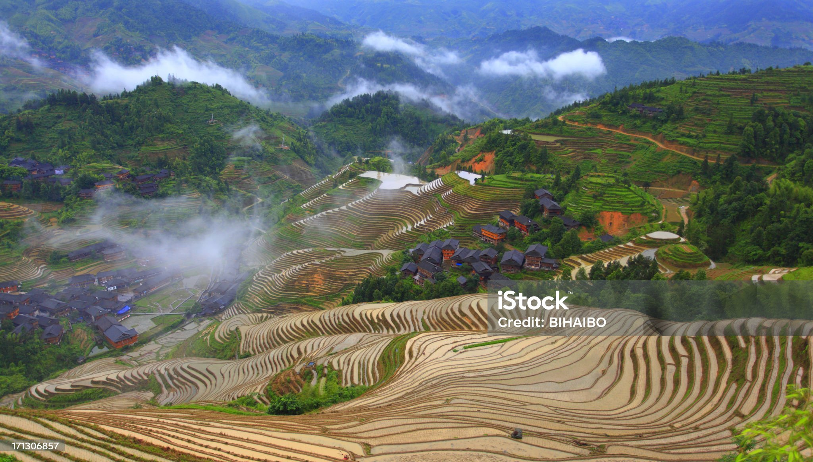

GREATWALL OF CHINA
The Great Wall of China simplified
Chángchéng, literally "ten thousand li long wall") is a series of fortifications that were built
across the historical northern borders of ancient Chinese states and Imperial China as protection
against various nomadic groups from the Eurasian Steppe. Several walls were built from as early as
the 7th century BC,[4] with selective

TERRACE GARDEN
The Chinese garden is a landscape garden style which has evolved over
three thousand years. It includes both the vast gardens of the Chinese emperors and members of the
imperial family, built for pleasure and to impress, and the more intimate gardens created by
scholars, poets, former government officials, soldiers and merchants, made for reflection and escape
from the outside world.

RICE PADDY FIELD
A paddy field is a flooded field of arable land used for growing
semiaquatic crops, most notably rice and taro. It originates from the Neolithic rice-farming
cultures of the Yangtze River basin in southern China, associated with pre-Austronesian and
Hmong-Mien cultures. It was spread in prehistoric times by the expansion of Austronesian peoples to
Island Southeast Asia, Madagascar, Melanesia, Micronesia, and Polynesia.